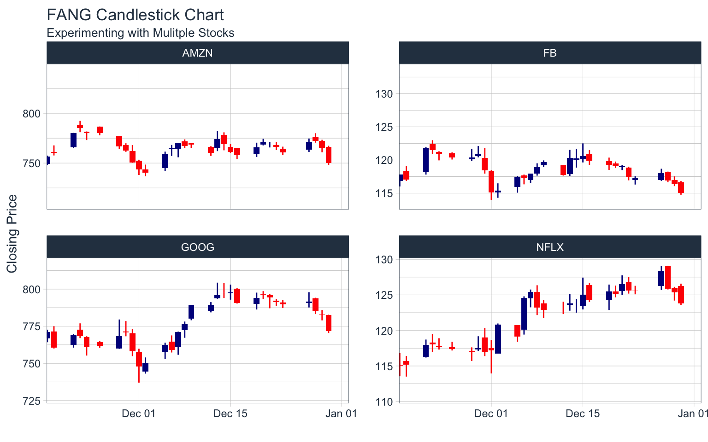
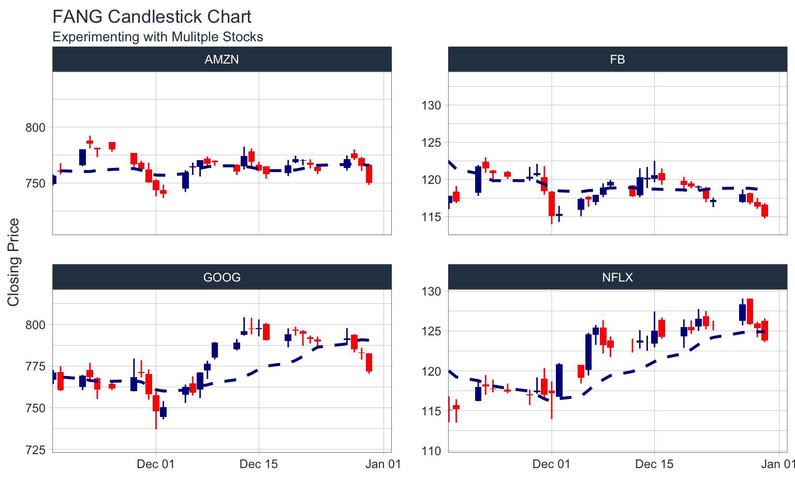
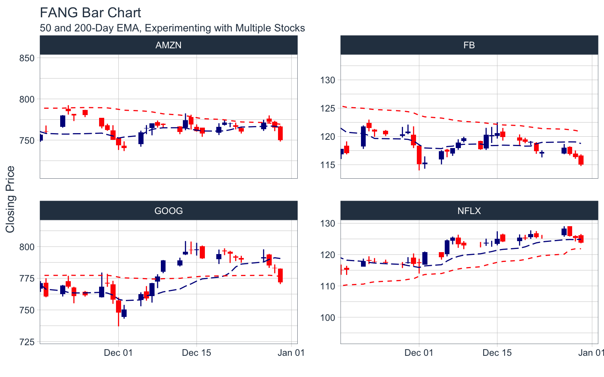
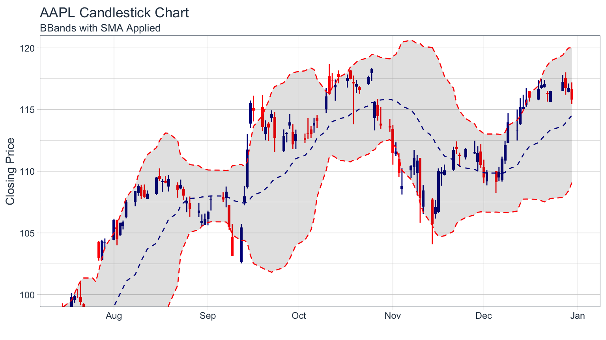
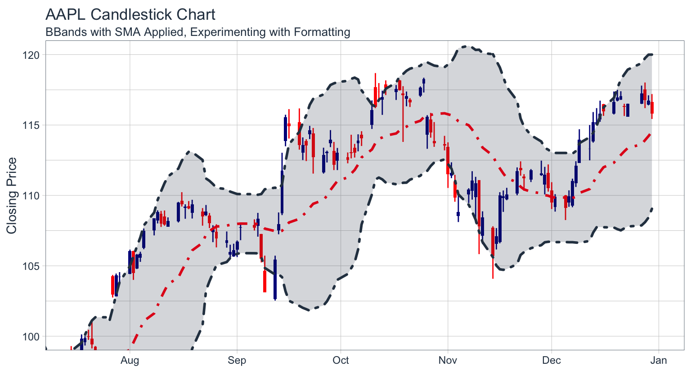
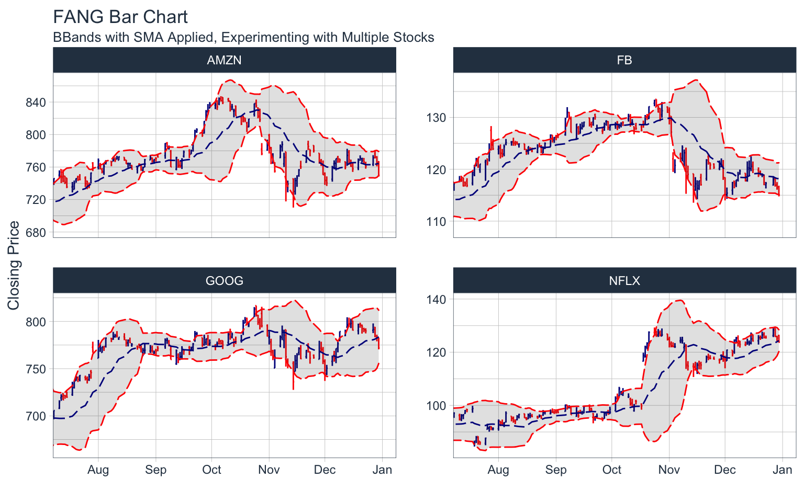
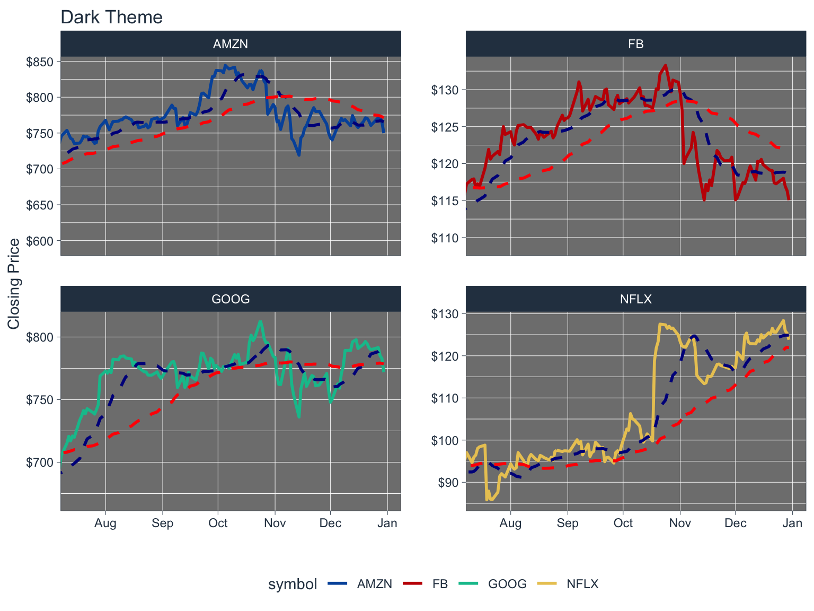

Charting with tidyquant
Matt Dancho
2017-05-01
Charting financial data using
ggplot2
Overview
The tidyquant package includes charting tools to assist users in developing quick visualizations in ggplot2 using the grammar of graphics format and workflow. There are currently three primary geometry (geom) categories and one coordinate manipulation (coord) category within tidyquant:
-
Chart Types: Two chart type visualizations are available using
geom_barchartandgeom_candlestick. -
Moving Averages: Seven moving average visualizations are available using
geom_ma. -
Bollinger Bands: Bollinger bands can be visualized using
geom_bbands. The BBand moving average can be one of the seven available in Moving Averages. -
Zooming in on Date Ranges: Two
coordfunctions are available (coord_x_dateandcoord_x_datetime), which prevent data loss when zooming in on specific regions of a chart. This is important when using the moving average and Bollinger band geoms.
Prerequisites
Load the tidyquant package to get started.
# Loads tidyquant, tidyverse, lubridate, xts, quantmod, TTR
library(tidyquant) The following stock data will be used for the examples. Use tq_get to get the stock prices.
# Use FANG data set
data("FANG")
# Get AAPL and AMZN Stock Prices
AAPL <- tq_get("AAPL", get = "stock.prices", from = "2015-09-01", to = "2016-12-31")
AMZN <- tq_get("AMZN", get = "stock.prices", from = "2000-01-01", to = "2016-12-31")The end date parameter will be used when setting date limits throughout the examples.
end <- as_date("2016-12-31")Chart Types
Financial charts provide visual cues to open, high, low, and close prices. The following chart geoms are available:
-
Bar Chart: Use
geom_barchart -
Candlestick Chart: Use
geom_candlestick
Line Chart
Before we visualize bar charts and candlestick charts using the tidyquant geoms, let’s visualize stock prices with a simple line chart to get a sense of the “grammar of graphics” workflow. This is done using the geom_line from the ggplot2 package. The workflow begins with the stock data, and uses the pipe operator (%>%) to send to the ggplot() function.
The primary features controlling the chart are the aesthetic arguments: these are used to add data to the chart by way of the aes() function. When added inside the ggplot() function, the aesthetic arguments are available to all underlying layers. Alternatively, the aesthetic arguments can be applied to each geom individually, but typically this is minimized in practice because it duplicates code. We set aesthetic arguments, x = date and y = close, to chart the closing price versus date. The geom_line() function inherits the aesthetic arguments from the ggplot() function and produces a line on the chart. Labels are added separately using the labs() function. Thus, the chart is built from the ground up by starting with data and progressively adding geoms, labels, coordinates / scales and other attributes to create a the final chart. This is enables maximum flexibility wherein the analyst can create very complex charts using the “grammar of graphics”.
AAPL %>%
ggplot(aes(x = date, y = close)) +
geom_line() +
labs(title = "AAPL Line Chart", y = "Closing Price", x = "") +
theme_tq()
Bar Chart
Visualizing the bar chart is as simple as replacing geom_line with geom_barchart in the ggplot workflow. Because the bar chart uses open, high, low, and close prices in the visualization, we need to specify these as part of the aesthetic arguments, aes(). We can do so internal to the geom or in the ggplot() function.
AAPL %>%
ggplot(aes(x = date, y = close)) +
geom_barchart(aes(open = open, high = high, low = low, close = close)) +
labs(title = "AAPL Bar Chart", y = "Closing Price", x = "") +
theme_tq()
We zoom into specific sections using coord_x_date, which has xlim and ylim arguments specified as c(start, end) to focus on a specific region of the chart. For xlim, we’ll use lubridate to convert a character date to date class, and then subtract six weeks using the weeks() function. For ylim we zoom in on prices in the range from 100 to 120.
AAPL %>%
ggplot(aes(x = date, y = close)) +
geom_barchart(aes(open = open, high = high, low = low, close = close)) +
labs(title = "AAPL Bar Chart",
subtitle = "Zoomed in using coord_x_date",
y = "Closing Price", x = "") +
coord_x_date(xlim = c(end - weeks(6), end),
ylim = c(100, 120)) +
theme_tq()
The colors can be modified using color_up and color_down arguments, and parameters such as size can be used to control the appearance.
AAPL %>%
ggplot(aes(x = date, y = close)) +
geom_barchart(aes(open = open, high = high, low = low, close = close),
color_up = "darkgreen", color_down = "darkred", size = 1) +
labs(title = "AAPL Bar Chart",
subtitle = "Zoomed in, Experimenting with Formatting",
y = "Closing Price", x = "") +
coord_x_date(xlim = c(end - weeks(6), end),
ylim = c(100, 120)) +
theme_tq()
Candlestick Chart
Creating a candlestick chart is very similar to the process with the bar chart. Using geom_candlestick, we can insert into the ggplot workflow.
AAPL %>%
ggplot(aes(x = date, y = close)) +
geom_candlestick(aes(open = open, high = high, low = low, close = close)) +
labs(title = "AAPL Candlestick Chart", y = "Closing Price", x = "") +
theme_tq()
We zoom into specific sections using coord_x_date.
AAPL %>%
ggplot(aes(x = date, y = close)) +
geom_candlestick(aes(open = open, high = high, low = low, close = close)) +
labs(title = "AAPL Candlestick Chart",
subtitle = "Zoomed in using coord_x_date",
y = "Closing Price", x = "") +
coord_x_date(xlim = c(end - weeks(6), end),
ylim = c(100, 120)) +
theme_tq()
The colors can be modified using color_up and color_down, which control the line color, and fill_up and fill_down, which control the rectangle fills.
AAPL %>%
ggplot(aes(x = date, y = close)) +
geom_candlestick(aes(open = open, high = high, low = low, close = close),
color_up = "darkgreen", color_down = "darkred",
fill_up = "darkgreen", fill_down = "darkred") +
labs(title = "AAPL Candlestick Chart",
subtitle = "Zoomed in, Experimenting with Formatting",
y = "Closing Price", x = "") +
coord_x_date(xlim = c(end - weeks(6), end),
ylim = c(100, 120)) +
theme_tq()
Combining Chart Geoms
Because the geoms are applied as layers, we can combine multiple chart types. The order of the geoms matters: the further down geoms will be overlayed on the preceding geoms. We’ll build up the plot starting with the candlestick, adding a line, and then adding a points.
AAPL %>%
ggplot(aes(x = date, y = close)) +
geom_candlestick(aes(open = open, high = high, low = low, close = close)) +
geom_line(color = "steelblue", size = 1) +
geom_point(color = "steelblue", size = 3) +
labs(title = "AAPL Candlestick Chart",
subtitle = "Combining Chart Geoms",
y = "Closing Price", x = "") +
coord_x_date(xlim = c(end - weeks(6), end),
ylim = c(100, 120)) +
theme_tq()
Charting Multiple Securities
We can use facet_wrap to visualize multiple stocks at the same time. By adding a group aesthetic in the main ggplot() function and combining with a facet_wrap() function at the end of the ggplot workflow, all four “FANG” stocks can be viewed simultaneously. You may notice an odd filter() call before the call to ggplot(). I’ll discuss this next.
start <- end - weeks(6)
FANG %>%
filter(date >= start - days(2 * 15)) %>%
ggplot(aes(x = date, y = close, group = symbol)) +
geom_candlestick(aes(open = open, high = high, low = low, close = close)) +
labs(title = "FANG Candlestick Chart",
subtitle = "Experimenting with Mulitple Stocks",
y = "Closing Price", x = "") +
coord_x_date(xlim = c(start, end)) +
facet_wrap(~ symbol, ncol = 2, scale = "free_y") +
theme_tq()
A note about out-of-bounds data (or “clipping”), which is particularly important with faceting and charting moving averages:
The coord_x_date coordinate function is designed to zoom into specific sections of a chart without “clipping” data that is outside of the view. This is in contrast to scale_x_date, which removes out-of-bounds data from the charting. Under normal circumstances clipping is not a big deal (and is actually helpful for scaling the y-axis), but with financial applications users want to chart rolling/moving averages, lags, etc that depend on data outside of the view port. Because of this need for out-of-bounds data, there is a trade-off when charting: Too much out-of-bounds data distorts the scale of the y-axis, and too little and we cannot get a moving average. The optimal method is to include “just enough” out-of-bounds data to get the chart we want. This is why below the FANG data is filtered by date from double the number of moving-average days (2 * n) previous to the start date. This yields a nice y-axis scale and still allows us to create a moving average line using geom_ma.
start <- end - weeks(6)
FANG %>%
filter(date >= start - days(2 * 15)) %>%
ggplot(aes(x = date, y = close, group = symbol)) +
geom_candlestick(aes(open = open, high = high, low = low, close = close)) +
geom_ma(ma_fun = SMA, n = 15, color = "darkblue", size = 1) +
labs(title = "FANG Candlestick Chart",
subtitle = "Experimenting with Mulitple Stocks",
y = "Closing Price", x = "") +
coord_x_date(xlim = c(start, end)) +
facet_wrap(~ symbol, ncol = 2, scale = "free_y") +
theme_tq()
Visualizing Trends
Moving averages are critical to evaluating time-series trends. tidyquant includes geoms to enable “rapid prototyping” to quickly visualize signals using moving averages and Bollinger bands.
Moving Averages
The following moving averages are available:
- Simple moving averages (SMA)
- Exponential moving averages (EMA)
- Weighted moving averages (WMA)
- Double exponential moving averages (DEMA)
- Zero-lag exponential moving averages (ZLEMA)
- Volume-weighted moving averages (VWMA) (also known as VWAP)
- Elastic, volume-weighted moving averages (EVWMA) (also known as MVWAP)
Moving averages are applied as an added layer to a chart with the geom_ma function. The geom is a wrapper for the underlying moving average functions from the TTR package: SMA, EMA, WMA, DEMA, ZLEMA, VWMA, and EVWMA. Here’s how to use the geom:
- Select a moving average function,
ma_fun, that you want to apply. - Determine the function arguments that need to be passed to the
ma_fun. You can investigate the underlying function by searching?TTR::SMA. - Determine the aesthetic arguments to pass. These will typically be
aes(x = date, y = close). The volume-weighted functions will require thevolumeargument in theaes()function. - Apply the moving average geom in your
ggplotworkflow.
Important Note: When zooming in on a section, use coord_x_date or coord_x_datetime to prevent out-of-bounds data loss. Do not use scale_x_date, which will affect the moving average calculation. Refer to Charting Multiple Securities.
Example 1: Charting the 50-day and 200-day simple moving average
We want to apply a SMA, so we research the TTR function and we see that it accepts, n, the number of periods to average over. We see that the aesthetics required are x, a date, and y, a price. Since these are already in the main ggplot() function, we don’t need to add the aesthetics to the geom. We apply the moving average geoms after the candlestick geom to overlay the moving averages on top of the candlesticks. We add two moving average calls, one for the 50-day and the other for the 200-day. We add color = "red" and linetype = 5 to distinguish the 200-day from the 50-day.
AAPL %>%
ggplot(aes(x = date, y = close)) +
geom_candlestick(aes(open = open, high = high, low = low, close = close)) +
geom_ma(ma_fun = SMA, n = 50, linetype = 5, size = 1.25) +
geom_ma(ma_fun = SMA, n = 200, color = "red", size = 1.25) +
labs(title = "AAPL Candlestick Chart",
subtitle = "50 and 200-Day SMA",
y = "Closing Price", x = "") +
coord_x_date(xlim = c(end - weeks(24), end),
ylim = c(100, 120)) +
theme_tq()
Example 2: Charting exponential moving averages
We want an EMA, so we research the TTR function and we see that it accepts, n, the number of periods to average over, wilder a Boolean, and ratio arguments. We will use wilder = TRUE and go with the default for the ratio arg. We see that the aesthetics required are x, a date, and y, a price. Since these are already in the main ggplot() function, we don’t need to modify the geom. We are ready to apply after the bar chart geom.
AAPL %>%
ggplot(aes(x = date, y = close)) +
geom_barchart(aes(open = open, high = high, low = low, close = close)) +
geom_ma(ma_fun = EMA, n = 50, wilder = TRUE, linetype = 5, size = 1.25) +
geom_ma(ma_fun = EMA, n = 200, wilder = TRUE, color = "red", size = 1.25) +
labs(title = "AAPL Bar Chart",
subtitle = "50 and 200-Day EMA",
y = "Closing Price", x = "") +
coord_x_date(xlim = c(end - weeks(24), end),
ylim = c(100, 120)) +
theme_tq()
Example 3: Charting moving averages for multiple stocks at once
We’ll double up using a volume-weighted average (VWMA) and apply it to the FANG stocks at once. Since VWMA is a volume-weighted function, we need to add volume as an aesthetic. Because we are viewing multiple stocks, we add a group aesthetic setting it to the symbol column which contains the FANG stock symbols. The facet wrap is added at the end to create four charts instead of one overlayed chart.
start <- end - weeks(6)
FANG %>%
filter(date >= start - days(2 * 50)) %>%
ggplot(aes(x = date, y = close, volume = volume, group = symbol)) +
geom_candlestick(aes(open = open, high = high, low = low, close = close)) +
geom_ma(ma_fun = VWMA, n = 15, wilder = TRUE, linetype = 5) +
geom_ma(ma_fun = VWMA, n = 50, wilder = TRUE, color = "red") +
labs(title = "FANG Bar Chart",
subtitle = "50 and 200-Day EMA, Experimenting with Multiple Stocks",
y = "Closing Price", x = "") +
coord_x_date(xlim = c(start, end)) +
facet_wrap(~ symbol, ncol = 2, scales = "free_y") +
theme_tq()
Bollinger Bands
Bollinger Bands are used to visualize volatility by plotting a range around a moving average typically two standard deviations up and down. Because they use a moving average, the geom_bbands function works almost identically to geom_ma. The same seven moving averages are compatible. The main difference is the addition of the standard deviation, sd, argument which is 2 by default, and the high, low and close aesthetics which are required to calculate the bands. Refer to Moving Averages for a detailed discussion on what moving averages are available.
Important Note: When zooming in on a section, use coord_x_date or coord_x_datetime to prevent out-of-bounds data loss. Do not use scale_x_date, which will affect the moving average calculation. Refer to Charting Multiple Securities.
Example 1: Applying BBands using a SMA
Let’s do a basic example to add Bollinger Bands using a simple moving average. Because both the candlestick geom and the BBands geom use high, low and close prices, we move these aesthetics to the main ggplot() function to avoid duplication. We add BBands after the candlestick geom to overlay the BBands on top.
AAPL %>%
ggplot(aes(x = date, y = close, open = open,
high = high, low = low, close = close)) +
geom_candlestick() +
geom_bbands(ma_fun = SMA, sd = 2, n = 20) +
labs(title = "AAPL Candlestick Chart",
subtitle = "BBands with SMA Applied",
y = "Closing Price", x = "") +
coord_x_date(xlim = c(end - weeks(24), end),
ylim = c(100, 120)) +
theme_tq()
Example 2: Modifying the appearance of Bollinger Bands
The appearance can be modified using color_ma, color_bands, alpha, and fill arguments. Here’s the same plot from Example 1, with new formatting applied to the BBands.
AAPL %>%
ggplot(aes(x = date, y = close, open = open,
high = high, low = low, close = close)) +
geom_candlestick() +
geom_bbands(ma_fun = SMA, sd = 2, n = 20,
linetype = 4, size = 1, alpha = 0.2,
fill = palette_light()[[1]],
color_bands = palette_light()[[1]],
color_ma = palette_light()[[2]]) +
labs(title = "AAPL Candlestick Chart",
subtitle = "BBands with SMA Applied, Experimenting with Formatting",
y = "Closing Price", x = "") +
coord_x_date(xlim = c(end - weeks(24), end),
ylim = c(100, 120)) +
theme_tq()
Example 3: Adding BBands to multiple stocks
The process is very similar to charting moving averages for multiple stocks.
start <- end - weeks(24)
FANG %>%
filter(date >= start - days(2 * 20)) %>%
ggplot(aes(x = date, y = close,
open = open, high = high, low = low, close = close,
group = symbol)) +
geom_barchart() +
geom_bbands(ma_fun = SMA, sd = 2, n = 20, linetype = 5) +
labs(title = "FANG Bar Chart",
subtitle = "BBands with SMA Applied, Experimenting with Multiple Stocks",
y = "Closing Price", x = "") +
coord_x_date(xlim = c(start, end)) +
facet_wrap(~ symbol, ncol = 2, scales = "free_y") +
theme_tq()
ggplot2 Functionality
Base ggplot2 has a ton of functionality that can be useful for analyzing financial data. We’ll go through some brief examples using Amazon (AMZN).
Example 1: Log Scale with scale_y_log10
ggplot2 has the scale_y_log10() function to scale the y-axis on a logarithmic scale. This is extremely helpful as it tends to expose linear trends that can be analyzed.
Continuous Scale:
AMZN %>%
ggplot(aes(x = date, y = adjusted)) +
geom_line(color = palette_light()[[1]]) +
scale_y_continuous() +
labs(title = "AMZN Line Chart",
subtitle = "Continuous Scale",
y = "Closing Price", x = "") +
theme_tq()
Log Scale:
AMZN %>%
ggplot(aes(x = date, y = adjusted)) +
geom_line(color = palette_light()[[1]]) +
scale_y_log10() +
labs(title = "AMZN Line Chart",
subtitle = "Log Scale",
y = "Closing Price", x = "") +
theme_tq()
Example 2: Regression trendlines with geom_smooth
We can apply a trend line quickly adding the geom_smooth() function to our workflow. The function has several prediction methods including linear ("lm") and loess ("loess") to name a few.
Linear:
AMZN %>%
ggplot(aes(x = date, y = adjusted)) +
geom_line(color = palette_light()[[1]]) +
scale_y_log10() +
geom_smooth(method = "lm") +
labs(title = "AMZN Line Chart",
subtitle = "Log Scale, Applying Linear Trendline",
y = "Adjusted Closing Price", x = "") +
theme_tq()
Loess:
AMZN %>%
ggplot(aes(x = date, y = adjusted)) +
geom_line(color = palette_light()[[1]]) +
scale_y_log10() +
geom_smooth(method = "loess") +
labs(title = "AMZN Line Chart",
subtitle = "Log Scale, Applying Loess Trendline",
y = "Adjusted Closing Price", x = "") +
theme_tq()
Example 3: Charting volume with geom_segment
We can use the geom_segment() function to chart daily volume, which uses xy points for the beginning and end of the line. Using the aesthetic color argument, we color based on the value of volume to make these data stick out.
AMZN %>%
ggplot(aes(x = date, y = volume)) +
geom_segment(aes(xend = date, yend = 0, color = volume)) +
geom_smooth(method = "loess", se = FALSE) +
labs(title = "AMZN Volume Chart",
subtitle = "Charting Daily Volume",
y = "Volume", x = "") +
theme_tq() +
theme(legend.position = "none") 
And, we can zoom in on a specific region. Using scale_color_gradient we can quickly visualize the high and low points, and using geom_smooth we can see the trend.
start <- end - weeks(24)
AMZN %>%
filter(date >= start - days(50)) %>%
ggplot(aes(x = date, y = volume)) +
geom_segment(aes(xend = date, yend = 0, color = volume)) +
geom_smooth(method = "loess", se = FALSE) +
labs(title = "AMZN Bar Chart",
subtitle = "Charting Daily Volume, Zooming In",
y = "Volume", x = "") +
coord_x_date(xlim = c(start, end)) +
scale_color_gradient(low = "red", high = "darkblue") +
theme_tq() +
theme(legend.position = "none") 
Themes
The tidyquant package comes with three themes to help quickly customize financial charts:
-
Light:
theme_tq()+scale_color_tq()+scale_fill_tq() -
Dark:
theme_tq_dark()+scale_color_tq(theme = "dark")+scale_fill_tq(theme = "dark") -
Green:
theme_tq_green()+scale_color_tq(theme = "green")+scale_fill_tq(theme = "green")
Light
n_mavg <- 50 # Number of periods (days) for moving average
FANG %>%
filter(date >= start - days(2 * n_mavg)) %>%
ggplot(aes(x = date, y = close, color = symbol)) +
geom_line(size = 1) +
geom_ma(n = 15, color = "darkblue", size = 1) +
geom_ma(n = n_mavg, color = "red", size = 1) +
labs(title = "Light Theme",
x = "", y = "Closing Price") +
coord_x_date(xlim = c(start, end)) +
facet_wrap(~ symbol, scales = "free_y") +
theme_tq() +
scale_color_tq() +
scale_y_continuous(labels = scales::dollar)
Dark
n_mavg <- 50 # Number of periods (days) for moving average
FANG %>%
filter(date >= start - days(2 * n_mavg)) %>%
ggplot(aes(x = date, y = close, color = symbol)) +
geom_line(size = 1) +
geom_ma(n = 15, color = "darkblue", size = 1) +
geom_ma(n = n_mavg, color = "red", size = 1) +
labs(title = "Dark Theme",
x = "", y = "Closing Price") +
coord_x_date(xlim = c(start, end)) +
facet_wrap(~ symbol, scales = "free_y") +
theme_tq_dark() +
scale_color_tq(theme = "dark") +
scale_y_continuous(labels = scales::dollar)
Green
n_mavg <- 50 # Number of periods (days) for moving average
FANG %>%
filter(date >= start - days(2 * n_mavg)) %>%
ggplot(aes(x = date, y = close, color = symbol)) +
geom_line(size = 1) +
geom_ma(n = 15, color = "darkblue", size = 1) +
geom_ma(n = n_mavg, color = "red", size = 1) +
labs(title = "Green Theme",
x = "", y = "Closing Price") +
coord_x_date(xlim = c(start, end)) +
facet_wrap(~ symbol, scales = "free_y") +
theme_tq_green() +
scale_color_tq(theme = "green") +
scale_y_continuous(labels = scales::dollar)